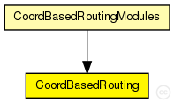

This documentation is released under the Creative Commons license
This documentation is released under the Creative Commons licenseGlobal Module for providing allround CBR information
The following diagram shows usage relationships between types. Unresolved types are missing from the diagram. Click here to see the full picture.
The following diagram shows inheritance relationships for this type. Unresolved types are missing from the diagram. Click here to see the full picture.
If a module type shows up more than once, that means it has been defined in more than one NED file.
| CoordBasedRoutingModules (compound module) | (no description) |
| Name | Type | Default value | Description |
|---|---|---|---|
| areaCoordinateSource | string |
@display("i=block/users"); bool enabled; |
|
| CBRstartAtDigit | int |
start at this digit using CBR |
|
| CBRstopAtDigit | int |
stop at this digit using CBR int coordCalcRuns; // How many runs will be started with random coordinates when calculating a node's coordinates? double waitForLandmarks @unit(s); // If not enough landmarks are available yet: Wait how long until next try? bool onlyCoordFault; // only coord measuring RTTs should be manipulated int coordCheckPercentage; // Sets the Range (in Percent) for which malicious computed Coordinates are allowed |
| Name | Value | Description |
|---|---|---|
| class | CoordBasedRouting |
// // Global Module for providing allround CBR information // simple CoordBasedRouting { parameters: @class(CoordBasedRouting); //@display("i=block/users"); //bool enabled; string areaCoordinateSource; // XML filename int CBRstartAtDigit; // start at this digit using CBR int CBRstopAtDigit; // stop at this digit using CBR //int coordCalcRuns; // How many runs will be started with random coordinates when calculating a node's coordinates? //double waitForLandmarks @unit(s); // If not enough landmarks are available yet: Wait how long until next try? //bool onlyCoordFault; // only coord measuring RTTs should be manipulated //int coordCheckPercentage; // Sets the Range (in Percent) for which malicious computed Coordinates are allowed }
This documentation is released under the Creative Commons license